要说最近的奥运会，国内外的焦点人物是谁？那肯定非最近横空出世的中国游泳天才潘展乐莫属！
先是破世界纪录勇摘100米金牌遭遇澳洲教练质疑，再是采访大胆“告状”直言被澳美队员轻视。
昨晚的4×100米混合泳接力比赛中，潘展乐更是实现惊天逆转，打破美国40年垄断，勇摘金牌，给质疑者们献上了一记响亮的耳光！
1
潘永乐逆转夺冠！
北京时间8月5日凌晨，巴黎奥运会男子4×100米混合泳接力的比赛中，由徐嘉余、覃海洋、孙佳俊、潘展乐组成的中国队拿下金牌，获得游泳队在本届奥运会上的第二金。
本场决赛中，一开始中国队选手就状态十足！老将徐嘉余在第1棒力压老对手墨菲以52秒37的成绩第1个到边，第2棒世锦赛三冠王覃海洋游出57秒98的优异成绩继续保持第1。
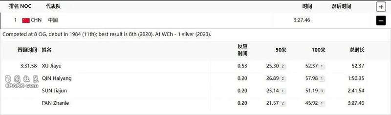
虽然第3棒蝶泳是中国队相对弱势项目，替补出战的孙家俊以51秒19的成绩跌到第三，但也没有落后太多，仍然紧咬美国、法国两个传统强队。
最终的第4棒更是让人振臂高呼！潘展乐奋勇直追，在最后20米反超所有对手，游出了惊人的45秒92，实现逆转，以领先美国队0.55秒的成绩夺得金牌。最终，美国队屈居第二，法国队位列第三。
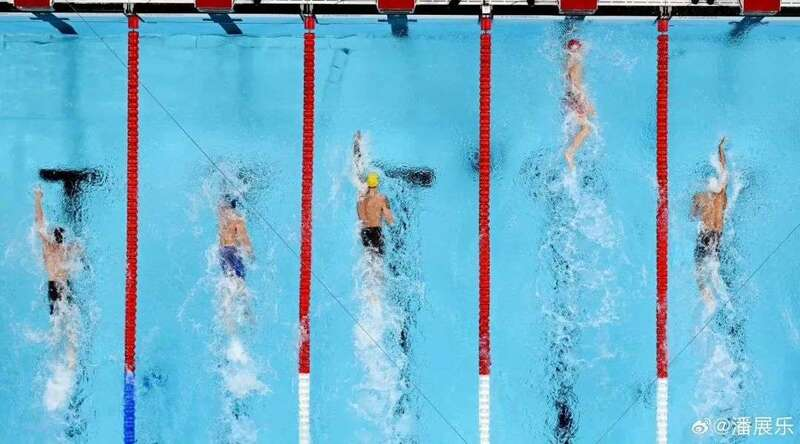
这个金牌意味着什么？中国游泳队创造了历史！
这一项目，向来是美、法等欧美强队的“天下”。从1984年洛杉矶奥运会至今，奥运会男子4×100米混合泳接力的金牌一直被美国垄断，美国队保持不败之势，实现十连冠！
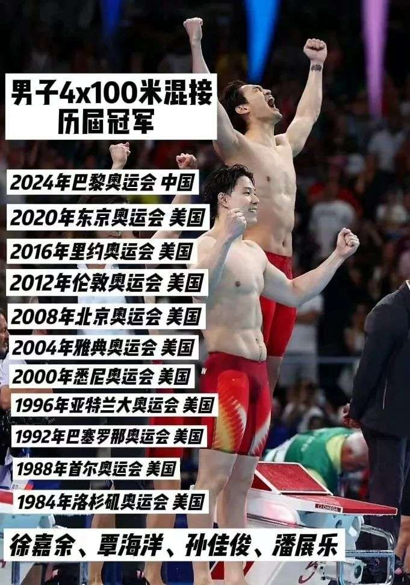
这个成绩对于潘展乐意味着什么？
这无疑是对这段时间，关于潘展乐所有质疑的最好回击！
接力赛中，潘展乐在最后100米游出45秒92的逆天成绩，刷新前两天自己在100米自由泳中46.40秒的成绩，可惜根据国际泳联规定，只有接力比赛中的第一棒运动员可以给成绩申请世界纪录。
不然潘展乐将实现在5天内两次打破世界纪录！
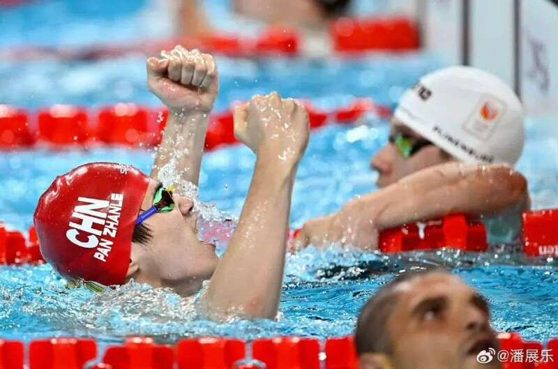
但潘展乐45秒92的成绩，已经创造了人类首次突破46秒的历史，在自己20岁生日这天实现了自己的目标，用实力狠狠回击了质疑者们！
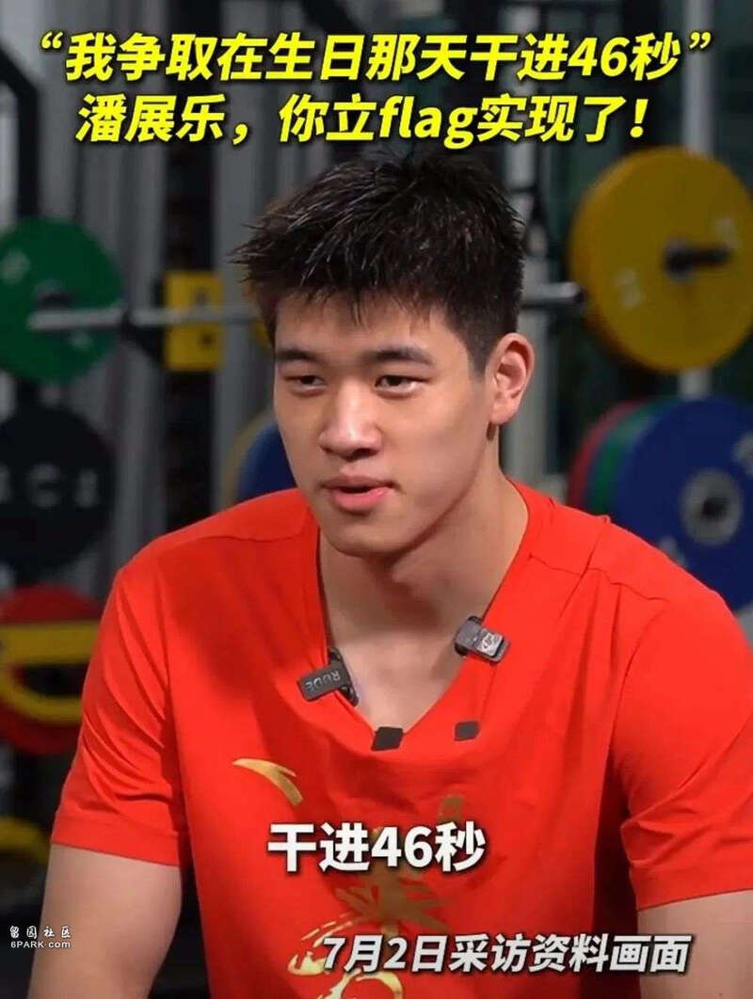
2
潘展乐“痛击”质疑者！
上周四的巴黎奥运会男子100米自由泳决赛中，19岁的潘展乐在巴黎奥运会上游出了46.40的好成绩，打破世界纪录，拿下金牌！
在这场备受关注的比赛中，潘展乐几乎领先于其他竞争对手一个身位，这一惊人的成绩，给他招来了一大批质疑。
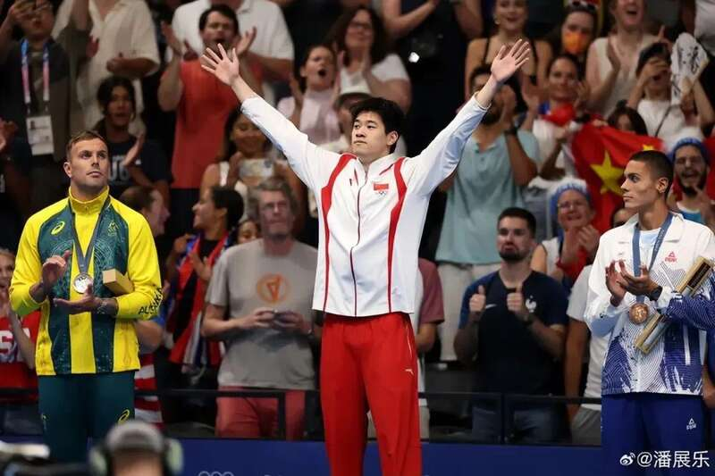
前澳大利亚奥运选手Brett Hawke表示，“我直说了，我对这场比赛感到愤怒，有以下几个原因：我的朋友们都是历史上最快的游泳运动员，从Rowdy Gaines、Alex Popov、Gary Hall Jr、Anthony Irvin，再到Kyle Chalmers。我非常了解这些人，我研究他们已经有30年了。”
“在那个赛场上，你不可能以一个身位的优势赢得100米自由泳的比赛，绝对不可能做到。”
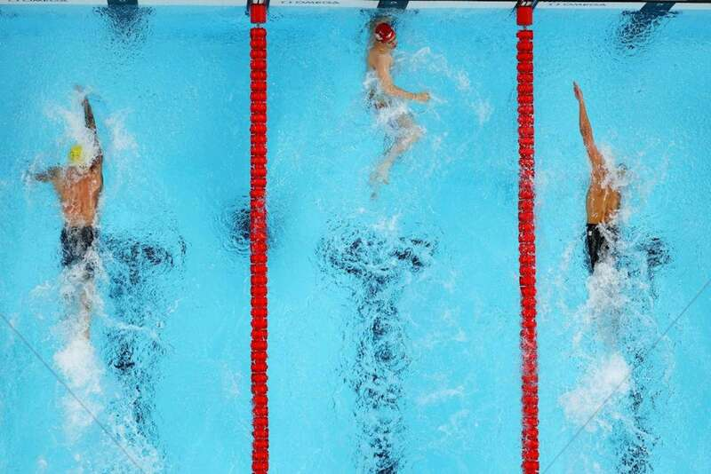
“100米自由泳中，潘展乐的出场速度比历史上任何人类都要快，在第二个50米的时候就开始拉开差距了，能够以如此快的速度出发，并返回，甩开另外的世界级运动员，这实在是太不可思议了！”
当被问及他是否认为这次破纪录的游泳比赛与药物有关时，Hawke强调，潘展乐的检测结果并没有呈阳性，但他仍然对这一成就心存疑虑。
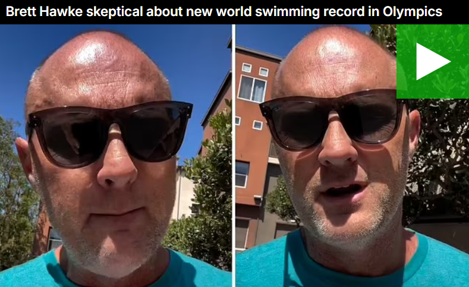
“没有证据表明他的药检呈阳性，但有证据表明这他的成绩与药物有关，潘展乐后半段的速度太离奇了。”
不过，也还是有客观的群众们，目前Hawke的ins已经被申讨他心胸狭隘的网友们攻陷，随后Hawke关闭了自己上万条骂声的ins评论区。
Hawke评论区沦陷后，还阴阳怪气地po了一张穿中国队服的照片，被网友怒批傲慢又无理！
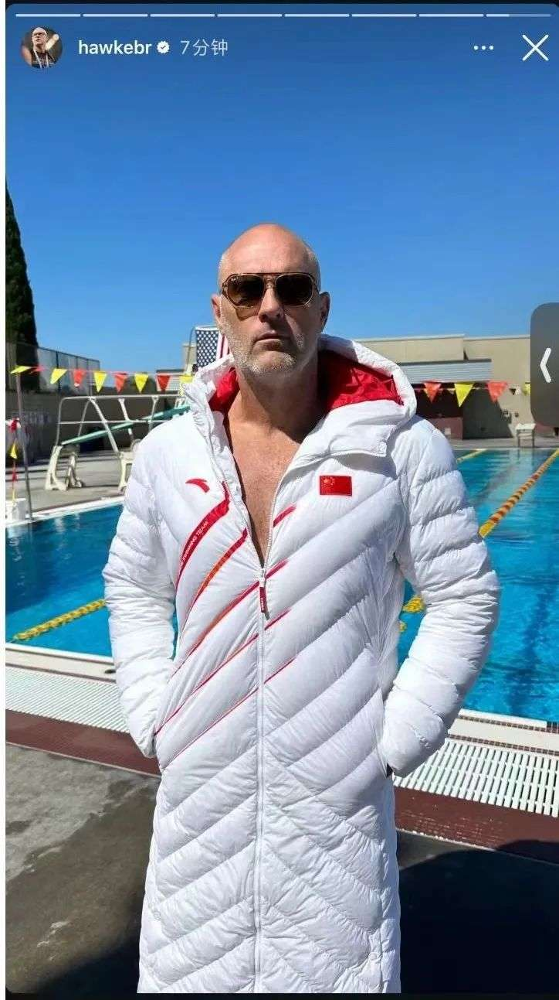
有美媒也发报道开始内涵，一边说潘展乐没有参与到关于中国游泳队的兴奋剂指控，一边又暗示近几个月他们接受了频繁的测试，有时一周三四次。
网友戏称，这种语无伦次，输不起的样子简直不要太滑稽！
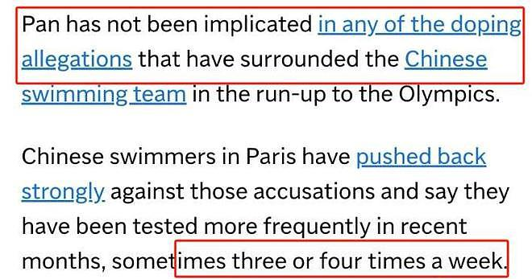
100米自由泳赛后，潘展乐曾直接回应过关于兴奋剂的争议问题：“去年我接受了29次检查，没有一次阳性。包括今年从我们冠军赛就是5月份到7月份也是有21次检查，也没有一次阳性。今天是我来到巴黎进行的第二次检查，就是赛内检查，接下来就期待结果吧。”
但大方直接的回应并没有让那些心胸狭隘的人放弃阴谋论。
美国游泳名将菲尔普斯也对潘展乐的成绩提出了质疑，在国会委员会听证会上，菲尔普斯表示WADA（世界反兴奋剂组织）在巴黎奥运会前针对中国游泳队的兴奋剂检查是不够的。
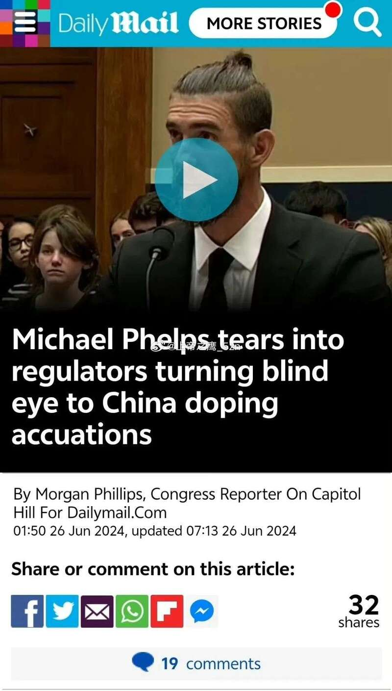
他说，“我希望这是一场我和你之间的比赛，而不是一场我和你体内七种兴奋剂的比赛！我的很多朋友都受到了这件事的影响，无法想象他们以后的运动生涯会面临什么样的场景。”
对于潘永乐在男子100米自由泳成绩，菲尔普斯表示，以超过1秒的优势赢得100米自由泳，太不可思议了，我的职业生涯中，从未见过如此大的优势。
3
国际奥委会力挺中国游泳队！
WADA理事会表示，涉及23名中国游泳运动员的兴奋剂调查完全符合规则。
中国游泳队成员张雨霏也对此回应表示，中国游泳队在巴黎奥运会接受了大量反兴奋剂调查，每个人大概被检查了20—30次，平均每个人一周检查3—4次。
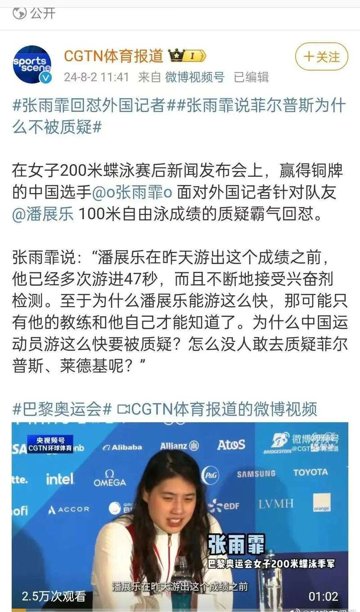
对于此次中国游泳队争议事件，国际奥委会肯定了中国运动员兴奋剂检测结果——完全合规有效！
国际奥委会运动员委员会委员加索尔表示，很遗憾让中国游泳队员接受了比其他国家运动员高一倍—三倍的兴奋剂测试，这是为了让其他国家运动员放心，尤其是美国运动员。
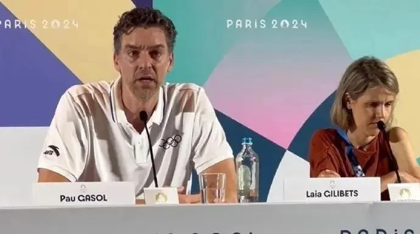
8月3日，在巴黎奥运会例行新闻发布会上，国际奥委会主席巴赫回应了，是否会在潘展乐打破世界纪录后，增加对中国游泳队的兴奋剂检测次数。巴赫表示，世界反兴奋剂组织以及国际泳联有资格决定到底对某一支队伍进行多少次兴奋剂测试。
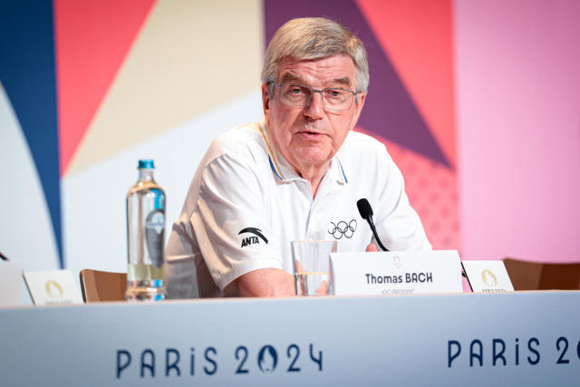
“他们都看不起你，偏偏你最争气”。在自己20岁生日这天，潘展乐用自己的绝对实力回应了所有的质疑。
竞技体育没有昨天、没有明天、只有今天。创造历史后，潘展乐表示，自己已经定好了下一个目标。
让我们为今天创造历史的潘展乐喝彩，也继续期待未来的更多惊喜。奥运会仍在继续，我们继续为运动健儿们加油！